WakeStride 사용 설명서
Windows 버전 기준입니다. 화면 구성과 각 기능을 순서대로 안내합니다.
01 시작하기
설치부터 첫 화면까지.
설치
내려받은 설치 파일을 실행하면 언어(한국어 / English / 日本語)를 먼저 고르는 화면이 나옵니다. 이후 안내에 따라 설치를 마치면 자동으로 앱이 실행됩니다.
첫 실행
- 앱 언어를 선택합니다.
- 일정·할일·노트를 저장할 폴더를 지정합니다("나중에 설정할게요"로 건너뛰어도 됩니다 — 설정 > 파일&링크에서 나중에 지정 가능).
02 화면 한눈에 보기
왼쪽(또는 하단) 사이드바의 4개 아이콘으로 화면을 전환합니다.
| 화면 | 내용 | 단축키 |
|---|---|---|
| 매트릭스 | 중요도·긴급도 4분면으로 할일 정리 | Ctrl+1 |
| 캘린더 | 월간/주간 일정 보기 | Ctrl+2 |
| 노트 | 폴더·파일 트리와 메모 편집기 | Ctrl+3 |
| 대시보드 | 통계와 프로젝트 보드(WBS) | Ctrl+4 |
설정 > 외관에서 화면을 한 번에 하나씩 볼지, 여러 화면을 나눠서 볼지 고를 수 있습니다 — 9. 화면 배치 참고.
03 매트릭스
아이젠하워 매트릭스 — 중요도와 긴급도로 할일을 4칸에 나눠 봅니다.
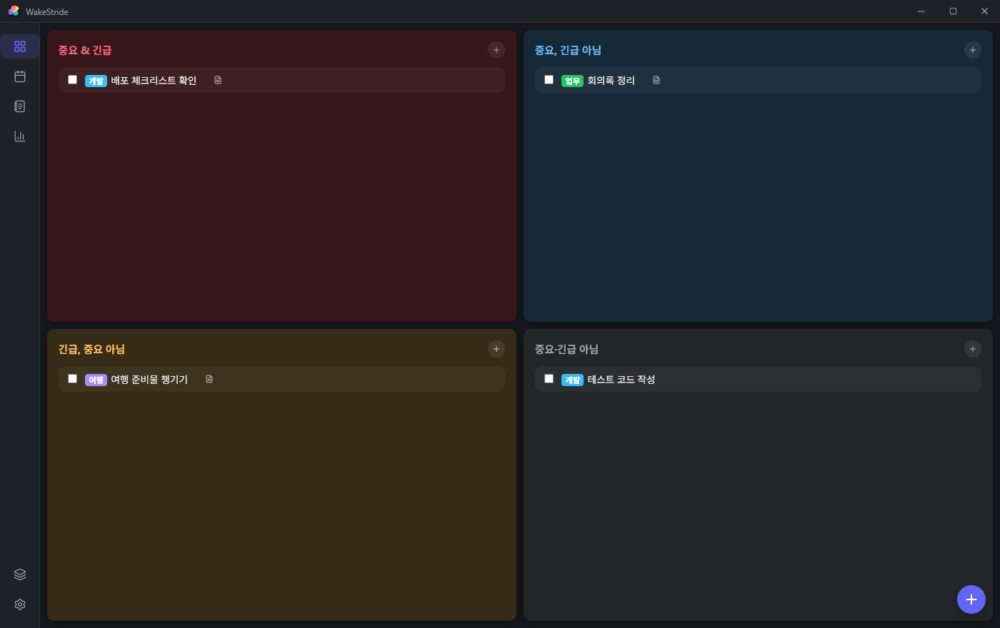
- 중요&긴급 / 중요, 긴급 아님 / 긴급, 중요 아님 / 중요·긴급 아님 4개 칸이 있습니다.
- 각 칸 오른쪽 위 + 버튼으로 그 칸에 맞는 할일을 바로 추가합니다.
- 체크박스를 누르면 완료 처리됩니다. 완료해도 3초간은 화면에 남아있다가 사라집니다(취소 여유를 두기 위함) — 사라진 뒤에도 데이터가 없어진 게 아니라, 대시보드 > 그룹별 진행도에서 "완료 항목 보기"로 계속 확인할 수 있습니다.
- 항목의 제목 앞에 색깔 태그가 붙어 있으면 그 항목이 속한 그룹(보통 노트 폴더)을 뜻합니다.
- 항목에 연결된 노트가 있으면 작은 노트 아이콘이 붙고, 클릭하면 바로 그 노트로 이동합니다.
- 체크박스가 아닌 항목 자체를 클릭하면 수정 화면이 열립니다.
04 캘린더
월간 / 주간 두 가지 보기를 제공합니다.
월간 보기
- 날짜를 클릭하면 옆(또는 아래)에 그날의 일정 목록이 나타나고, 목록 위쪽 + 버튼으로 새 일정을 추가합니다.
- 일정 막대는 소속 그룹의 색으로 표시되고, 여러 날에 걸친 일정은 하나의 막대로 이어집니다.
- 공휴일은 날짜 아래 이름표로 자동 표시됩니다.
- 창이 좁아지면(3분할·커스텀 레이아웃 등) 막대 대신 작은 점으로 자동 전환됩니다.
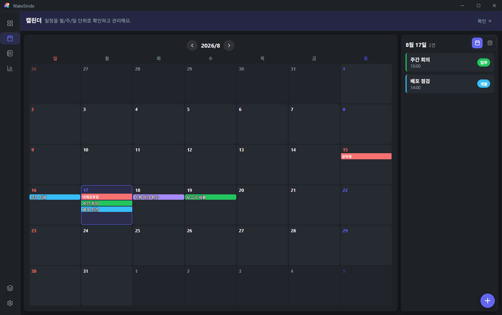
주간 보기
- 시간대별 그리드로 표시되고, 빈 시간을 클릭하면 그 날짜·시간으로 새 일정이 열립니다.
- 지금 시각이 빨간 선으로 표시되고, 화면을 열면 현재 시간대로 자동 스크롤됩니다.
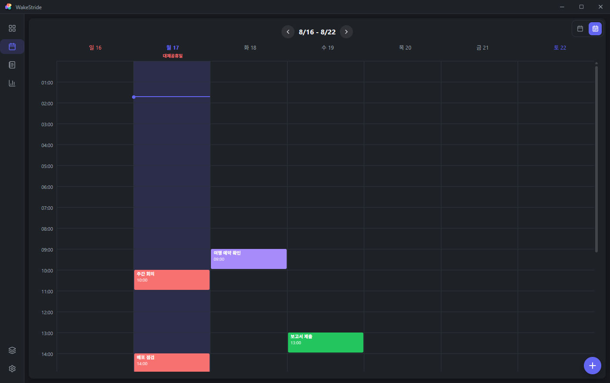
05 노트
왼쪽 파일 트리 + 오른쪽 편집기 구조입니다.
파일·폴더 만들기
트리 위쪽 "파일"/"폴더" 버튼이나 우클릭 메뉴의 "새 파일"/"새 폴더"를 누르면 트리 안에 바로 이름을 입력하는 칸이 생깁니다. Enter로 확정, Esc로 취소합니다. 같은 방식으로 이름 변경도 트리 안에서 바로 합니다.
우클릭(길게 누르기) 메뉴
- 새 파일 / 새 폴더
- 탐색기에서 열기 (Windows 데스크톱만)
- 이름 변경
- 그룹 색상 변경 / 색상 지우기 (폴더만)
- 일정 등록 / 할일 등록 — 그 폴더(또는 파일의 상위 폴더)를 그룹으로 미리 선택한 채 일정·할일 등록 화면이 열립니다. 파일에서 실행하면 그 파일이 연결된 노트로도 자동 지정됩니다.
- 삭제
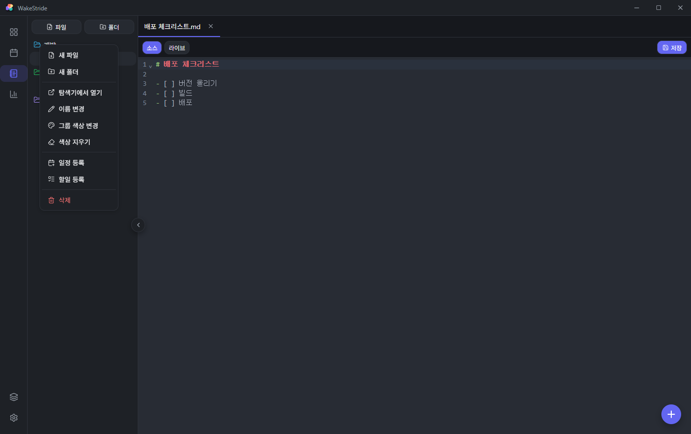
편집기
- 여러 파일을 탭으로 동시에 열어둘 수 있습니다. Ctrl+Tab으로 다음 탭, Ctrl+W로 탭 닫기, Ctrl+S로 저장.
- 마크다운(.md) 파일은 소스(직접 문법 입력) / 라이브(꾸며진 화면에서 바로 편집) 두 모드를 Ctrl+Shift+V로 전환할 수 있습니다.
- 입력을 멈추면 2초 뒤 자동으로 백업되고, 저장하지 않고 앱을 껐다 켜도 마지막 작업 내용이 복구됩니다.
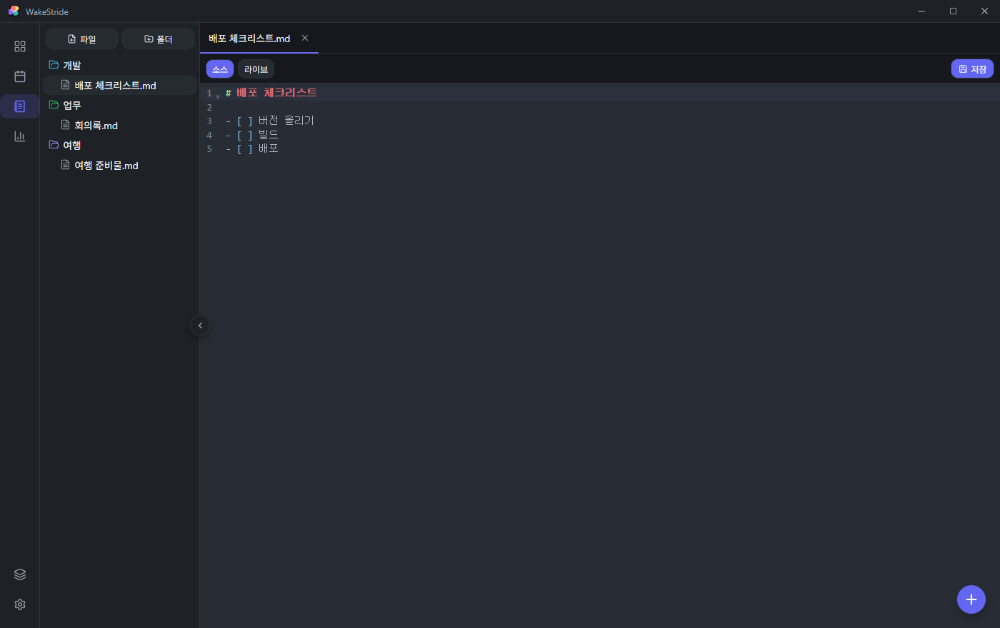
06 대시보드
통계 탭과 프로젝트 보드 탭으로 나뉩니다.
통계
- 전체 진행률, 이번 주/이번 달 기한 준수율, 설치 후 사용 일수를 카드로 보여줍니다.
- 매트릭스 분포(4분면별 할일 수)와 최근 5주 기한 준수율 그래프.
- 그룹별 진행도 — 그룹마다 진행률 막대가 표시되고, "완료 항목 N개 보기"를 누르면 매트릭스에서 사라진 완료 항목들을 완료일과 함께 다시 볼 수 있습니다.
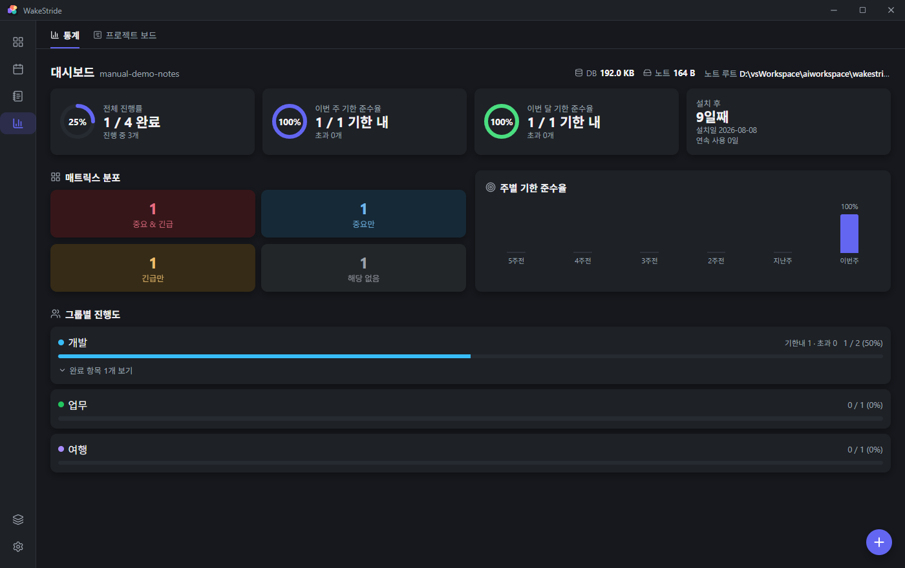
프로젝트 보드
그룹(노트 폴더)마다 카드가 하나씩 생기고, 그 달의 일정·할일이 날짜 막대로 표시됩니다. 하위 폴더는 들여쓰기로 이어져 표시됩니다. 일정에 딸린 할일이 있으면 막대를 눌러 목록을 펼쳐볼 수 있고, 그룹에 연결된 노트 파일은 배지를 눌러 바로 열 수 있습니다.
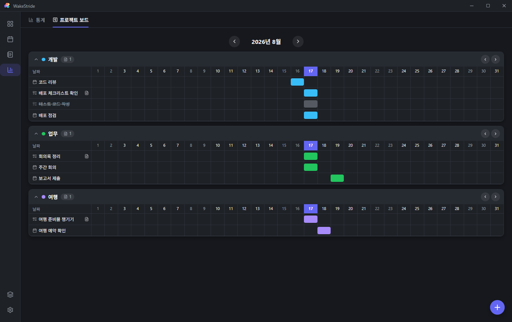
07 검색 / 빠른 입력
화면 우측 하단에 항상 떠 있는 동그란 버튼(FAB) 하나로 검색과 등록을 전부 처리합니다. 어떻게 누르느냐에 따라 결과가 달라지는, 이 앱에서 가장 손에 익히면 빠른 기능입니다.
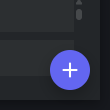
① 짧게 탭 — 검색 / 새로 만들기
버튼을 눌렀다 바로 떼면(또는 Ctrl+K) 검색창이 열립니다.
- 글자를 입력하면 할일·일정·노트·설정 검색 결과가 동시에 나타나고, 결과를 클릭하면 해당 화면으로 이동합니다(설정 결과는 해당 탭이 바로 열립니다).
- 같은 창 아래쪽 "새로 만들기"에서 할일/일정/노트 중 하나를 골라 바로 만들 수 있습니다. 할일은 중요/긴급 여부를 한 번 더 물어보고, 일정은 오늘 날짜로 바로 만들어지며, 노트는 입력한 글자를 파일 이름으로 노트 루트에 바로 생성됩니다.
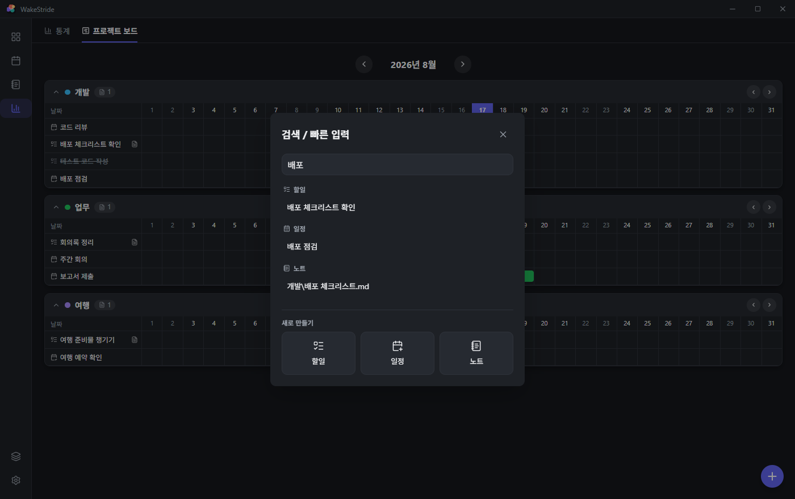
② 누른 채 드래그 — 방향으로 할일 즉시 등록
버튼을 누르고 있으면 손을 떼기 전이라도 바로 매트릭스와 똑같은 색의 4방향 링이 나타납니다. 손가락(마우스)을 뗀 방향에 따라 그 사분면에 맞는 할일이 제목만 입력하면 바로 등록되는 화면으로 열립니다 — 매트릭스 화면에서 항목이 배치되는 위치와 정확히 같은 방향입니다.
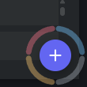
| 드래그 방향 | 등록되는 할일 |
|---|---|
| 왼쪽 위 (↖) | 중요 & 긴급 |
| 오른쪽 위 (↗) | 중요, 긴급 아님 |
| 왼쪽 아래 (↙) | 긴급, 중요 아님 |
| 오른쪽 아래 (↘) | 중요·긴급 아님 |
누른 직후에는 아직 방향이 정해지지 않아 4칸이 같은 두께로 보이고, 살짝이라도(약 14px) 움직이면 그 방향의 칸이 굵게 강조되며 실시간으로 바뀝니다.
③ 움직이지 않고 꾹 누르기 — 새 일정
버튼을 누른 채 0.5초 이상 방향을 바꾸지 않고 그대로 있으면(드래그 없이) 새 일정 등록 화면이 곧바로 열립니다.
08 데스크톱 위젯
바탕화면 아이콘 사이에 실제로 붙는 위젯입니다 — 항상 맨 뒤에 깔리고, 별도 창처럼 겹쳐 뜨지 않습니다.
- 설정 > 일반 > 데스크톱 위젯에서 위젯 열기/닫기를 켭니다.
- 표시 내용을 달력만 / 매트릭스만 / 둘 다 중에 고를 수 있습니다.
- 위치·크기도 같은 설정 화면의 X/Y/너비/높이 값으로 조절합니다("현재 값 불러오기"로 지금 위치를 채워넣고 조금씩 수정하면 편합니다).

09 화면 배치
설정 > 외관 > 레이아웃에서 고릅니다.
- 단일 화면 — 한 번에 한 화면만 보여줍니다(기본값).
- 3분할 — 창이 가로로 넓을 때 노트를 왼쪽에, 캘린더·매트릭스를 오른쪽 위/아래로 동시에 보여줍니다.
- 커스텀 — 노트/캘린더/매트릭스/하루/이번주 중 원하는 화면들을 직접 배치하고 크기를 정할 수 있습니다. 실제 화면에서도 경계선을 드래그해 크기를 다시 조절할 수 있습니다. (데스크톱 전용)
3분할·커스텀 상태에서는 사이드바에 조합 보기 아이콘이 추가로 나타나고 Ctrl+5로도 전환됩니다 — 나눠진 화면과, 마지막에 선택했던 화면 하나를 꽉 채운 모습을 오갑니다.
10 설정
7개 탭으로 나뉩니다.
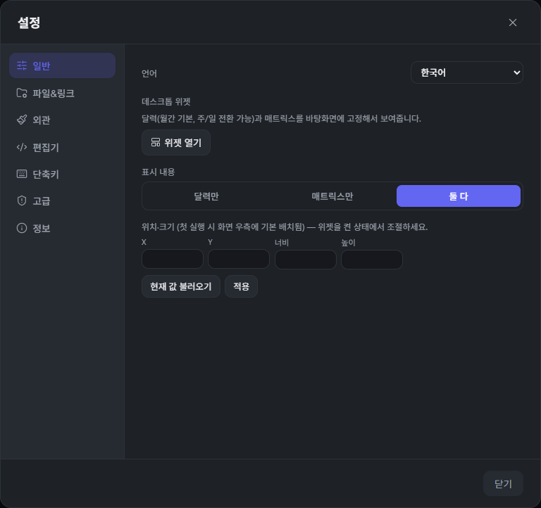
| 탭 | 내용 |
|---|---|
| 일반 | 언어, 데스크톱 위젯 켜기/끄기·내용·위치 |
| 파일&링크 | 작업공간(기기별 데이터 묶음), 노트 저장 폴더, 새 노트 기본 확장자, 폴더↔그룹 동기화 |
| 외관 | 테마(라이트/다크), 포인트 컬러, 모서리 모양, 화면 배치 |
| 편집기 | 글꼴, 배경, 색상 테마, 마크다운 표시 스타일 전반 |
| 단축키 | 전체 단축키 목록 확인(읽기 전용) |
| 고급 | 할일/일정/그룹/전체 데이터 초기화(되돌릴 수 없음, 주의) |
| 정보 | 버전, 업데이트 확인, 기능 안내 다시 보기, 피드백, 오픈소스 라이선스 |
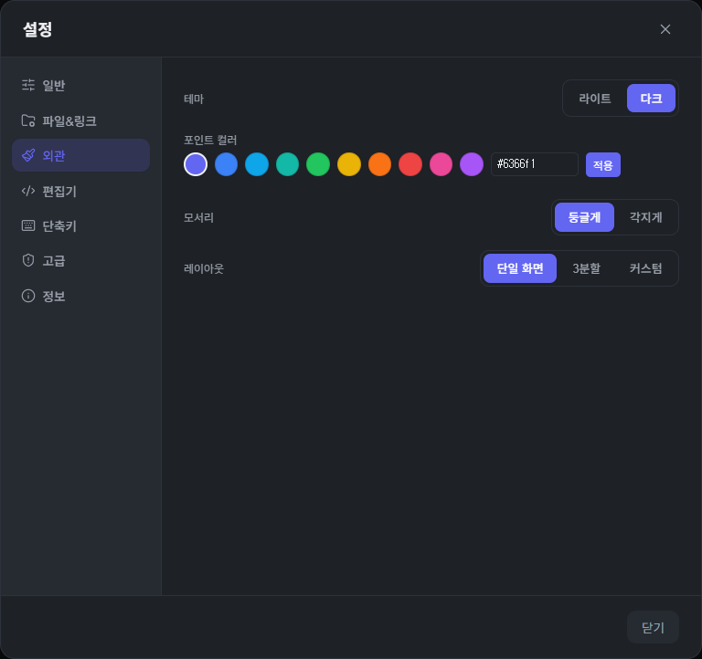
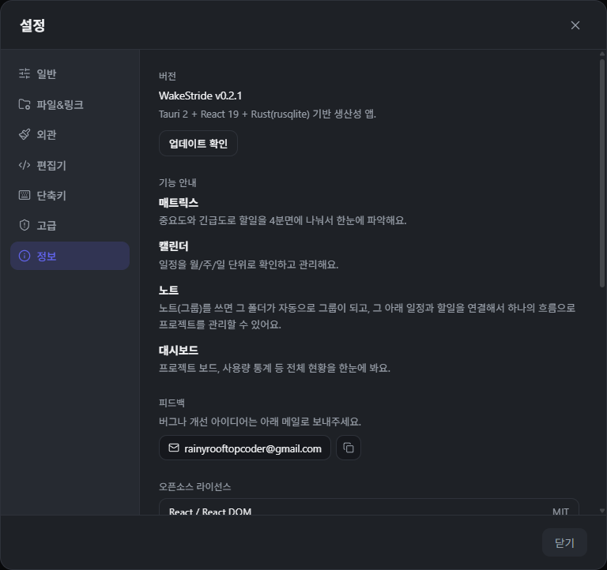
11 단축키
전역
| Ctrl+N | 빠른 입력 열기 |
| Ctrl+K | 검색 열기 |
| Ctrl+, | 설정 열기 |
| Ctrl+1 | 매트릭스로 전환 |
| Ctrl+2 | 캘린더로 전환 |
| Ctrl+3 | 노트로 전환 |
| Ctrl+4 | 대시보드로 전환 |
| Ctrl+5 | 조합 보기로 전환(3분할·커스텀에서만) |
노트 화면
| Ctrl+S | 저장 |
| Ctrl+W | 현재 탭 닫기 |
| Ctrl+Tab / Ctrl+Shift+Tab | 다음/이전 탭 |
| Ctrl+B | 파일 트리 접기/펼치기 |
| Ctrl+Shift+V | 소스/라이브 전환(.md만) |
캘린더 화면
| T | 오늘로 이동 |
| ← / → | 이전/다음 기간 |
| M | 월간 보기 |
| W | 주간 보기 |
이 표는 앱 내 설정 > 단축키 화면과 항상 동일하게 유지됩니다. 노트 편집기 안에서는 이 외에도 일반적인 코드 편집기 단축키(실행 취소/찾기/줄 이동 등)를 그대로 쓸 수 있습니다.
12 여러 기기에서 쓰기
서버 없이도 여러 PC에서 같은 데이터를 이어서 씁니다.
- 각 PC에 WakeStride를 설치합니다.
- 설정 > 파일&링크(또는 첫 실행 화면)에서, 모든 기기가 똑같이 동기화되는 폴더(예: 구글 드라이브 안의 한 폴더)를 노트 저장 폴더로 지정합니다.
- 먼저 데이터를 쌓아둔 기기에서 그 폴더를 지정하면 실제 일정·할일 데이터가 그 폴더 안으로 옮겨지고, 나중에 같은 폴더를 지정하는 다른 기기는 그 데이터를 그대로 이어받습니다(기존 데이터를 덮어쓰지 않습니다).
노트 파일뿐 아니라 일정·할일 데이터, 폴더별 색상까지 기기와 상관없이 동일하게 보입니다. 실제 폴더 동기화(구글 드라이브 등)는 WakeStride가 아니라 사용자가 설치한 동기화 프로그램이 처리합니다 — WakeStride는 그 폴더를 읽고 쓸 뿐, 클라우드에 직접 접속하지 않습니다.
13 업데이트
설정 > 정보에서 업데이트 확인을 누르면 새 버전이 있는지 확인합니다. 새 버전이 있으면 버전 번호가 표시되고, 지금 설치를 누르면 내려받은 뒤 자동으로 앱이 다시 시작되며 적용됩니다. 자동으로(사용자 동작 없이) 확인하지는 않습니다 — 항상 이 버튼을 직접 눌러야 합니다.